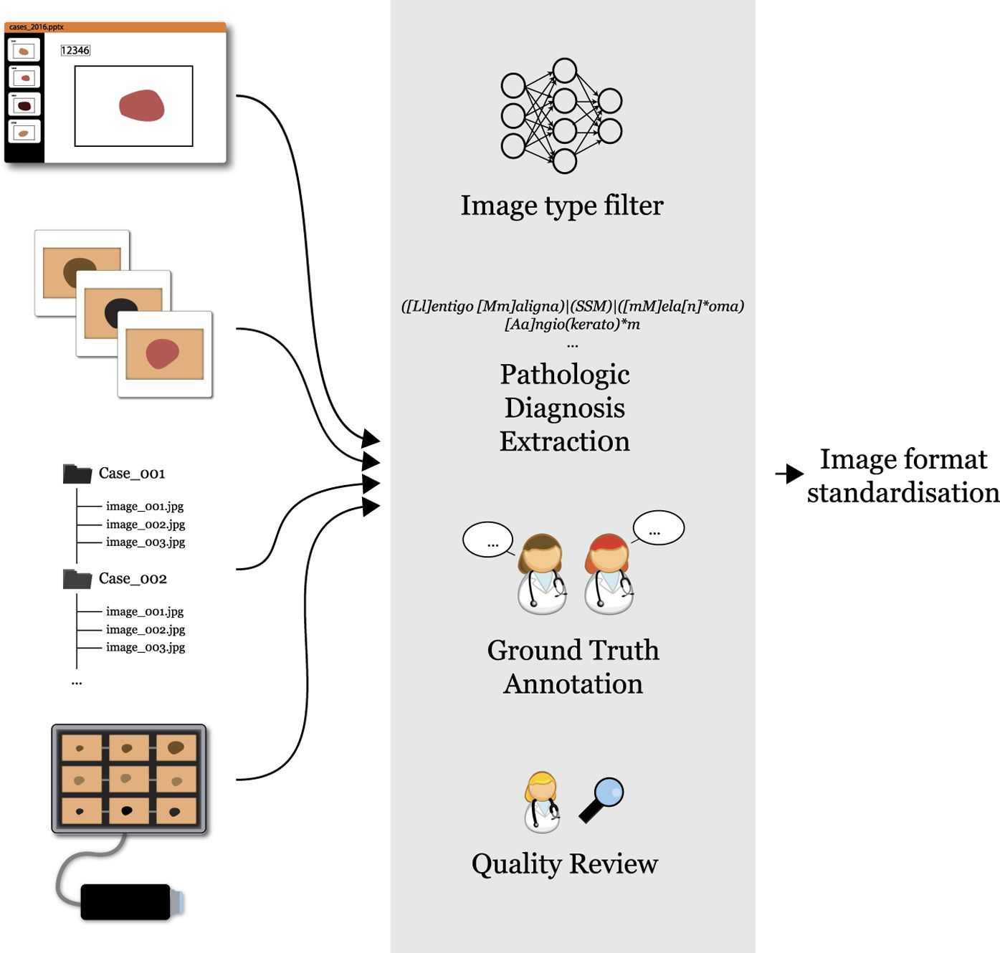
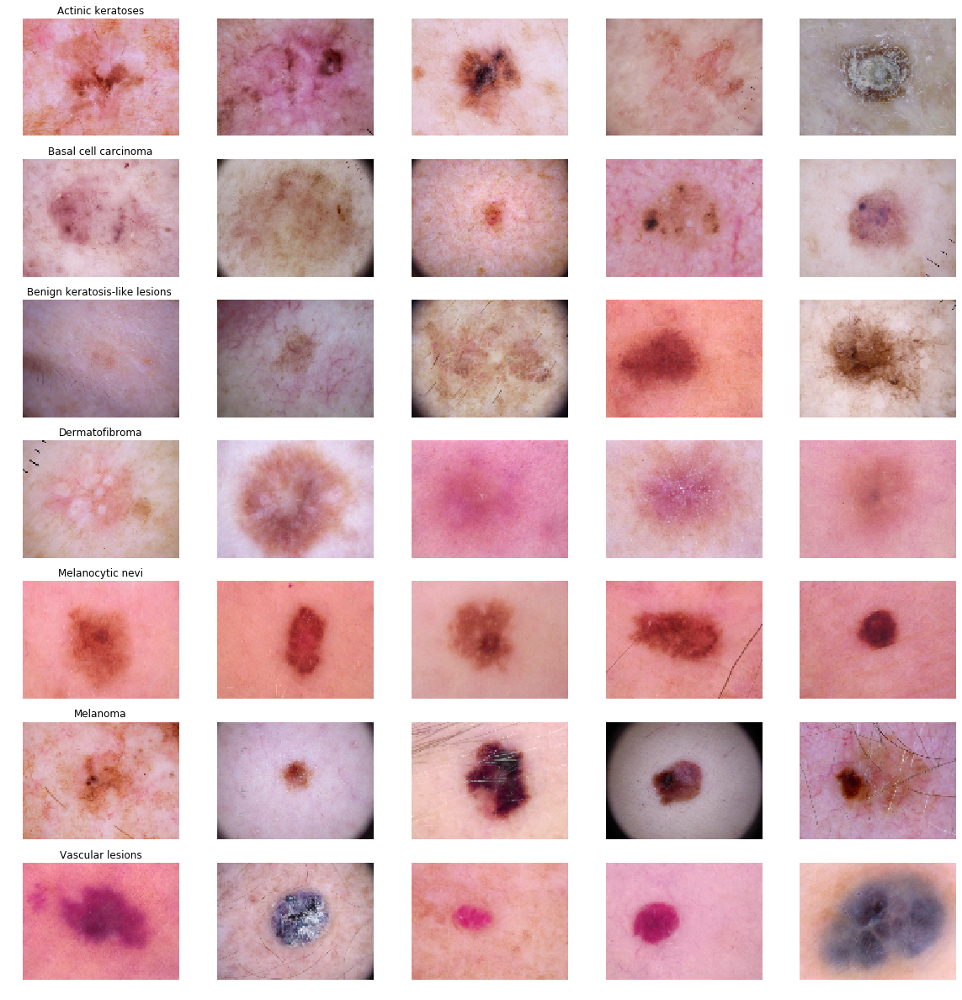
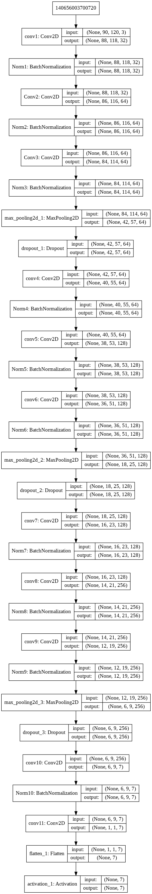
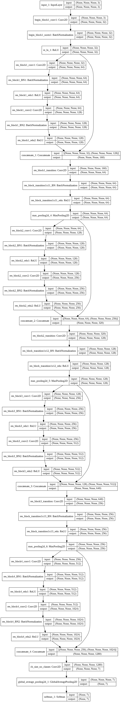
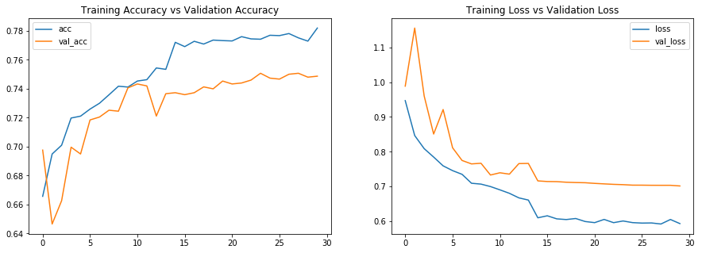
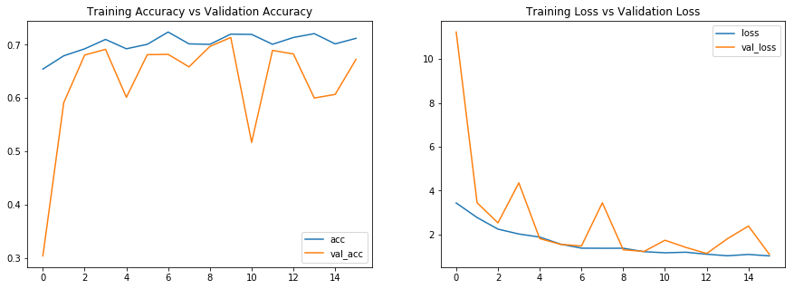

Skin Cancer Lesion Detection (ISCI Challenge)
The International Skin Imaging Collaboration (ISIC) is an international effort to improve melanoma diagnosis, sponsored by the International Society for Digital Imaging of the Skin (ISDIS). The ISIC Archive contains the largest publicly available collection of quality controlled dermoscopic images of skin lesions.
Skin cancer is a major public health problem, with over 5,000,000 newly diagnosed cases in the United States every year. Melanoma is the deadliest form of skin cancer, responsible for an overwhelming majority of skin cancer deaths. In 2015, the global incidence of melanoma was estimated to be over 350,000 cases, with almost 60,000 deaths. Although the mortality is significant, when detected early, melanoma survival exceeds 95%.
Reference to implementation: Check on GitHub

About dataset
Training of neural networks for automated diagnosis of pigmented skin lesions is hampered by the small size and lack of diversity of available dataset of dermatoscopic images. We tackle this problem by releasing the HAM10000 ("Human Against Machine with 10000 training images") dataset. We collected dermatoscopic images from different populations, acquired and stored by different modalities. The final dataset consists of 10015 dermatoscopic images which can serve as a training set for academic machine learning purposes. Cases include a representative collection of all important diagnostic categories in the realm of pigmented lesions: Actinic keratoses and intraepithelial carcinoma / Bowen's disease (akiec), basal cell carcinoma (bcc), benign keratosis-like lesions (solar lentigines / seborrheic keratoses and lichen-planus like keratoses, bkl), dermatofibroma (df), melanoma (mel), melanocytic nevi (nv) and vascular lesions (angiomas, angiokeratomas, pyogenic granulomas and hemorrhage, vasc).
It has 7 different classes of skin cancer which are listed below :
1. Melanocytic nevi
2. Melanoma
3. Benign keratosis-like lesions
4. Basal cell carcinoma
5. Actinic keratoses
6. Vascular lesions
7. Dermatofibroma
Sample Image For Each Class

Approch
Such biomedical images require very precise training since lesion size in an image might even vary from 100x100 pixel to 1x1 pixel. Detection and classifying such low resolution lesion is very important and also difficult. We did not knew what approch to be taken first, so we decided based on previous experiences to come up with 2 architectures:
1. Simple Sequential Architecture.
2. Custom ResNet Architecture.
Simple sequential model :
Custom ResNet model :
Cyclic Learning rate :
Along with custom ResNet model, we try to use CLR because the number of parameters in resnet are in millions and clr is a great technique to produce results very fast. The concept of cyclic learning rate and it's parameters are inspired from Cyclical Learning Rates for Training Neural Networks by Leslie N. Smith
.
We use base learning rate of 0.001 and max learning rate of 0.1 with step size of 212, which is double the value of steps per epoch.
Final Plots using :
1. Sequential Network :
2. ResNet :
Reference to implementation: Check on GitHub